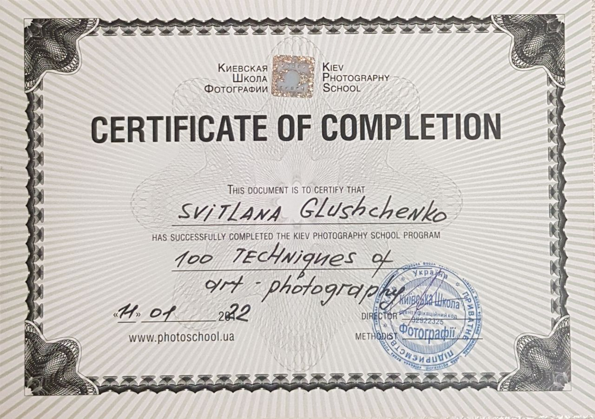

About me
Hello, friends!
My name is Svitlana Glushchenko. I am a professional photographer from Irpen, Ukraine.
I specialize in art photography, and I really love to photograph interesting people, emphasizing them individuality.
I was educated at the Kyiv School of Photography. I cooperate with the most famous online resource for the realization of works of photography YOURDAILYPHOTOGRAPH (USA). I am a member of an online project «PhotographersForUkraine».
Certificates
